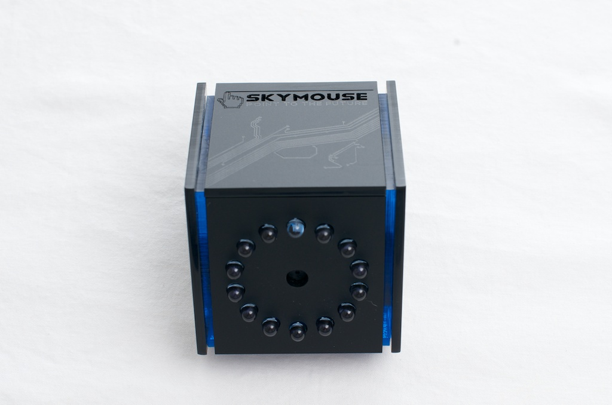

designing a new type of mouse and sharing a new method of interaction
Skymouse was my first practical design project. Working as an intern with the team, our goal was to create a wireless mouse that would change how we interact with computers. We were also inspired by ergonomics and the possibility of creating a mouse that
would be feel natural, react intuitively, maximize usability, and optimize workflow. The team decided the best way to achieve these goals would be to create a device that interprets finger and hand motions as mouse inputs.
We first started with explorations into the different kinds of interactions possible given the scope of our concept. After settling on a finger-controlled device, we looked into the kinds of sensors that would facilitate our goals in the most efficient
manner. Infrared sensors were chosen as they could be used to detect the location of the finger and its movements with minimal delay and latency, while utilizing the Arduino platform. Much of my focus was placed on producing the logo and the sleek
design for the housing of the internal components. The project leader and I conceptualized, prototyped, and created a minimalistic shape that served both functionally as a sturdy unit to contain the components while still retaining a strong visual
aesthetic that mirrored our concept for simplicity with the Skymouse.
Arduino was the main key to this project, allowing us to read the inputs from the sensors while translating that to quick, responsive feedback on the computer. In addition to programming the microcontroller, we also had to solder the individual components
to our self-designed PCB boards to ensure that the resulting device would be compact and robust. Finally, CAD modeling was employed to visualize the exterior, using a mix of careful measurements and creative attitude to create the final product.
A particular challenge we had during this task was the responsiveness of the product. There was a danger that our product would become too gimmicky if the reactions were either not as sharp as we wanted it, or if it was too sensitive. To
address this, we had to deconstruct our initial process of how an input from sensors resulted in an output on the computer and re-apply a much more methodical and specified approach to processing the raw data. The most easily overlooked challenge,
however, was the logistics of running the actual Kickstarter campaign that we attempted. The crowd-sourcing demanded constant attention and communication with potential investors, which was initially very overwhelming for our small team. While our
campaign ultimately did not succeed, it did provide a valuable lesson in how important communication and teamwork is.
